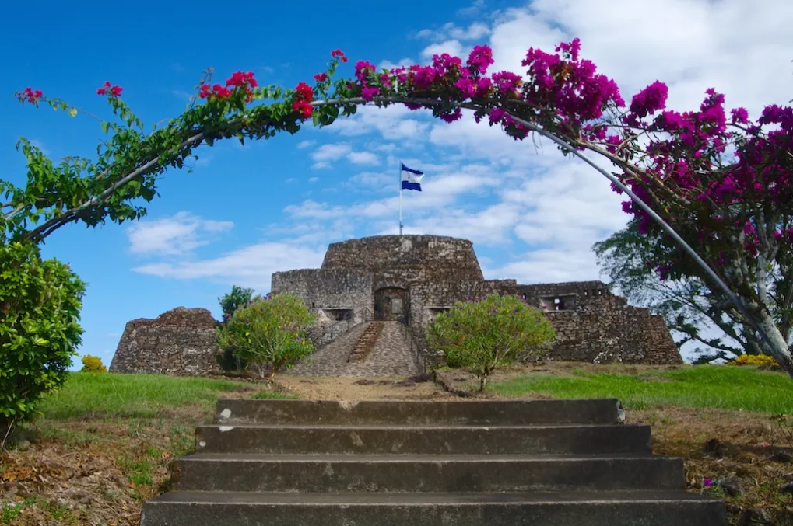
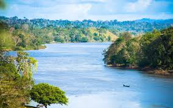

🏰 Fortaleza El Castillo
Una fortaleza construida en el siglo XVII para proteger esta importante ruta fluvial.

🌳 Reserva Indio Maíz
Una de las reservas biológicas más importantes de Centroamérica.

🚤 Río San Juan
Un río histórico que conecta el lago Cocibolca con el mar Caribe.